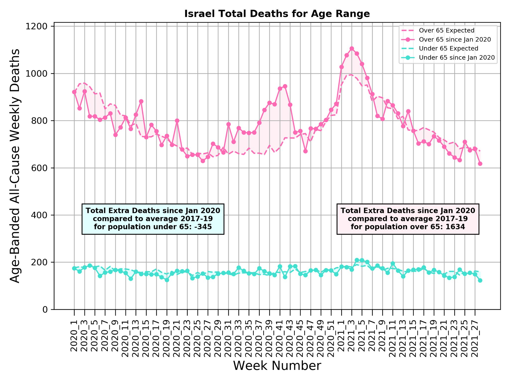
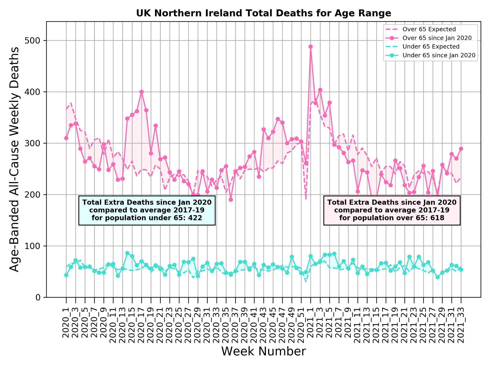

All graphs herein are the work, property, and copyright of Dr. Michael Levitt of Stanford University. Other contributers to the underlying work are Franceso Zonta and Andrea Scaiewicz. All quotes are Dr. Michael Levitt's direct from the linked Tweet of his Twitter account. All other notes are my own.
SOURCES for all data used for calculations of mortality
For most recent excess deaths of individual countries and US states see EXCESS DEATH by LOCATION
9 April:
"All our data indicates that COVID-19 Israel is no longer an issue.
With 1,600 extra deaths over those expected by age-adjusted calculations, the death toll was just 3.6% higher than expected over 60 weeks from start of 2020."
from TWEET: Israel 9 April 2021 for week 7 (21 February 2021) :
NOTE: Total excess death for Israel at 21 Feb 2021 = 1615 (excess death for ages under 65 = -219 ; excess for ages over 65 = 1834 );
NOTE: Israel's excess deaths are still low, having increased only 31, 8 in over ages 65 and 23 in under age 65. Total excess death for Israel at 21 Mar 2021 = 1646 (excess death for ages under 65 = -196 ; excess for ages over 65 = 1842) ;
20 Aug:
"Wish I knew.
Maybe each population has own natural immunity threshold due to prior infections.
Threshold would be high in India due to crowding & hygiene. Also Sweden as many aged.
Low in Israel due to high fraction of population who are young & health.
IL & SE ex-death low"
NOTE: TOTAL EXCESS DEATH ISRAEL: 1367 (excess death for ages under 65= -234 ; ages over 65= 1601)
Week 22 (6 June) 2021
"Latest excess death since Jan-2020, age-adjusted for population of five age-bands using 2017 to 2019 as reference.
Most reliable death data from for 38 locations only from mortality.org
Sweden < 2 weeks; Israel < 4 weeks. Why such high excess death < 65 in Chile?"
NOTE:
death for ages under 65 = -345 excess for ages over 65 = 1634 TOTAL : 1289
Week 28 2021 (18 July)

"Sweden: keep infection spreading for even distribution of immune.
Israel: high level of cases & vaccination but no effort to spread evenly.
Israel now has sizable pockets of susceptible people.
Surely expert epidemiologists knew lockdown would cause this?
Now we pay double."
Jul 3: "UK reported COVID-19 Cases/Death, CFR, is 1200 - 400 as delay from case to death varies from 0 to 30 days.
Maximum IFR 0.08 to 0.25%. UK E&W excess death to week 15 or 23 negative for all & noisy for ages 15-64.
Good news! Delta variant seems weak. ..... ?"
Jul 8: "Update on UK and the Delta Variant.
Recent UK death is as expected so no excess.
Reported COVID-19 deaths are 500 to 1,000 times less than cases so CRF of ~0.2% to ~0.07%.
These carefully recorded UK data could prove or disprove the dangers of Delta."
NOTE: death for ages under 65 = 15647 ; excess for ages over 65 = 46483 ; Total Excess Death = 62130
Week 24 2021 (20 Jun)
"Here are the updated age-adjusted excess mortality numbers.
Also weekly graphs for Sweden, Israel and England & Wales. Some take-aways:
(1) Sweden in deficit all year.
(2) Israel excess 2021_29 to 2021_35
(3) UK E&W in deficit since 2021_09. Slight excess since 21_29."
NOTE: excess death for ages under 65= 422 for ages over 65 =618 ; TOTAL= 1040 :
Week 33 2021 (22 Aug)

NOTE: Expected death rates are calculated seperately for each of three years previous to the Covid epidemic, (2017, 2018, 2019). Deaths of each age band is divided by population of each age band then dividing that by 1 million in order to find how many deaths per million were normally expected in the abscence of Covid for each year. The results of these 3 years are then averaged together, still keeping each age band seperate.
Deaths rates that happened during the Covid pandemic are then calculated the same way, deaths per age band divided by the population of that age band for the year in question, which as of this writing would be 2020 and 2021, and then standardized to 1 million just like the expected baseline was. So the expected baseline for 2020 will be different than the expected baseline for 2021 because the populations of those years are different.
First published on Twitter 21 Jan 2021.
Methods explained :
"Data can be used in 3 ways to calculate expected deaths.
(1) as average death in the reference years.
(2) as average corrected for the change in total population.
(3) as average for each age band corrected for its population, what we call age-adjusted.
(1) If D(i) is death in reference years i, then expected death in year c is E(c)=average[D(i)].
(2) If P(i) is population; E(c)=P(c)*average[D(i)/P(i)].
(3) If (P(i,j) is population of age band j in year i, D(i,j) the corresponding death; E(c,j)=P(c,j)*average[D(i,j)/P(i,j)]
If a country's population is increasing, the number of expected deaths by scheme (2) will be greater than by (1).
If the proportion of older people is increasing in recent years, the expected deaths by age-adjusted scheme (3) will be greater than by (1) or (2).
We use (3).
The proportion of elderly is increasing in some countries affected by WWII, where the average age of baby-boomers, born between 1945 and 1965, is now 65.
Also, recent northern winters have been milder leading to lower flu deaths, so populations of elderly are increasing.
Each country had number of natural deaths a year. Excess death can be expressed either as a percentage or as number of weeks of risk (1 week is 1/52 of the annual deaths or ~2%). Weeks of risk help show that each week year we live, there is an age-dependent risk of dying.
This is by far my most complicate Tweet. It was produced using a template from Jose Gefaell
@ChGefaell using graphs made by @andreascaie Jose also taught me how to embed the plots in a slide show. Thanks to both."
SOURCES
all-cause deaths and populations of countries, regions and New York City are from mortality.org
all-cause deaths of individual US states are from the Center for Disease Control (CDC)